Hi, I'm Methembe
I am
A Software developer exploring how code, AI, and digital marketing come together to create high-performing digital experiences.
A bit about me
I'm a Software Developer who enjoys turning ideas into digital experiences that are useful, intuitive, and well designed.
I'm interested in more than just writing code. I enjoy exploring how a product works, how people interact with it, and how it can connect with the right audience. That's what led me to explore software development alongside product design and digital marketing.
Through personal and collaborative projects, I've had the opportunity to design and build responsive web experiences, work with UI/UX principles, use Git and GitHub, and take projects from an idea to a deployed product.
I'm currently completing a Software Development Specialization at Uncommon.org, where I'm continuing to learn by building, experimenting, and solving real problems.
At the end of the day, I enjoy building things, learning along the way, and creating digital products that people can actually find useful.
Tools & Technologies
Development
Design & Product
Digital Marketing
Deployment & Tools
Experience
Frontend Developer
Building responsive web applications with clean UI and engaging interactions using HTML, CSS, and JavaScript.
UI/UX Designer
Designing intuitive user experiences and modern interfaces with a focus on accessibility and visual hierarchy.
Digital Marketing
Applying content marketing, SEO, and AI-driven strategies to build high-performing digital experiences.
Digital Product Builder
Transforming ideas into functional digital products through research, design, and iterative development.
Product Thinker
Looking beyond the interface to understand the problem, the user, and the purpose behind a product — and finding practical ways to bring those ideas to life.
Featured Projects
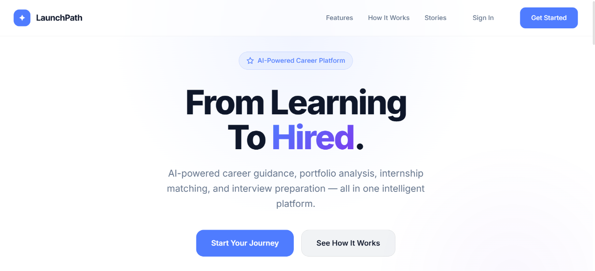
LaunchPath AI
An AI-powered career development platform that helps students become internship-ready through assessment, portfolio analysis, and personalized guidance.
The Problem
The original site had broken accessibility, poor visual hierarchy, and wasn't responsive on mobile devices.
The Process
Audited the existing layout, redesigned the component structure with semantic HTML, and rebuilt the styles with a mobile-first CSS approach.
The Result
A fully responsive, accessible website with improved load times and a cleaner visual experience across all devices.
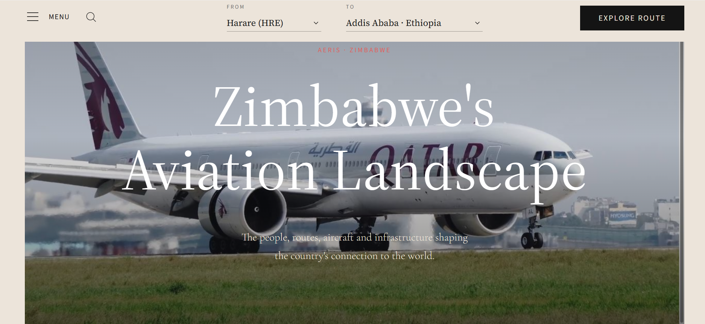
Aeris
A modern aviation intelligence platform that makes aviation data accessible, visually engaging, and editorial in experience.
The Problem
Aviation websites either provide large amounts of data with poor UX or focus heavily on enthusiasts while excluding casual users.
The Process
Prioritized information hierarchy, reduced visual clutter, created editorial-style layouts, and introduced progressive disclosure patterns.
The Result
A premium aviation experience combining data-heavy products with thoughtful user experience design and responsive layouts.
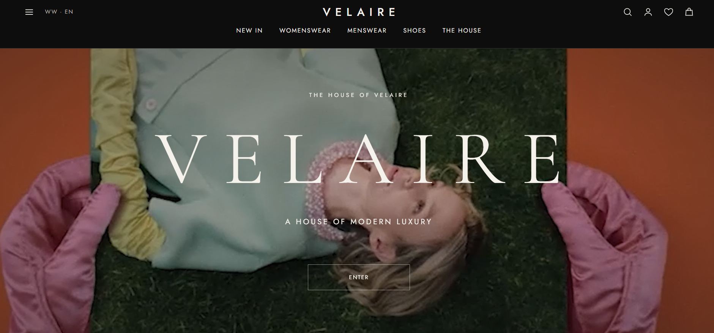
VELAIRE
A luxury fashion house digital brand world designed to communicate culture, craftsmanship, and modern luxury beyond e-commerce.
The Problem
Emerging fashion brands build websites that look like online stores with product grids and sales messaging instead of aspirational experiences.
The Process
Designed as a digital luxury house with editorial storytelling, brand philosophy, campaign imagery, and deliberate pacing over transactional patterns.
The Result
A brand ecosystem that sells belonging, identity, and culture before products, using sophisticated typography, whitespace, and architectural layouts.
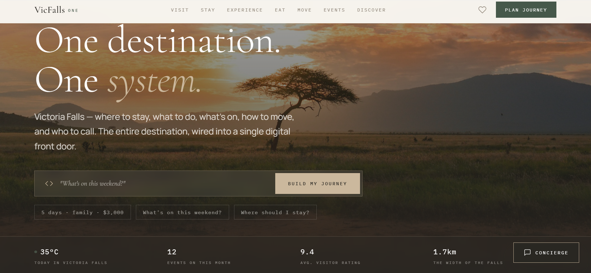
VicFalls One
A digital tourism ecosystem centralizing accommodation, activities, restaurants, and trip planning for Victoria Falls.
The Problem
Visitors needed multiple websites for accommodation, activities, restaurants, and transportation — creating a fragmented travel experience.
The Process
Built modular architecture with reusable components, scalable database design, JWT authentication, and consistent navigation patterns.
The Result
A full-stack tourism platform demonstrating product thinking and the ability to design systems solving real-world business problems.
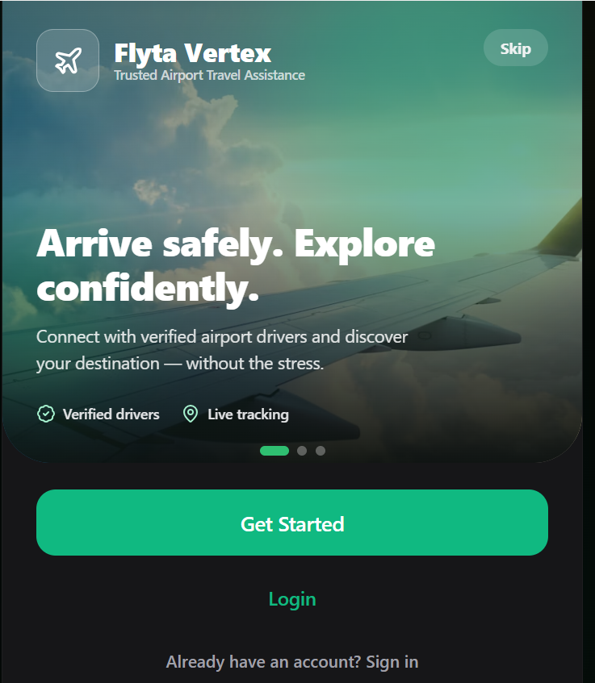
Flyta Vertex
A digital airport transfers platform simplifying transportation between airports, hotels, and tourism destinations.
The Problem
Airport transportation is fragmented with unclear pricing, unreliable operators, and complex booking processes that create traveller stress.
The Process
Designed clear booking flows, consistent visual design, strong information hierarchy, and immediate user feedback through form validation.
The Result
A service-oriented platform solving real-world transportation challenges while maintaining focus on usability and customer trust.
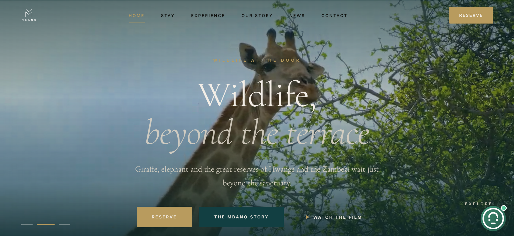
Mbano Manor
A luxury hospitality website concept using immersive storytelling, elegant typography, and premium digital experience design.
The Problem
Many hospitality websites rely on generic templates that fail to communicate the emotional value of a destination to luxury guests.
The Process
Focused on whitespace, typography, visual rhythm, and content hierarchy instead of excessive visual effects to communicate luxury.
The Result
An emotionally engaging experience supporting luxury branding through large imagery, elegant typography, and smooth interactions.
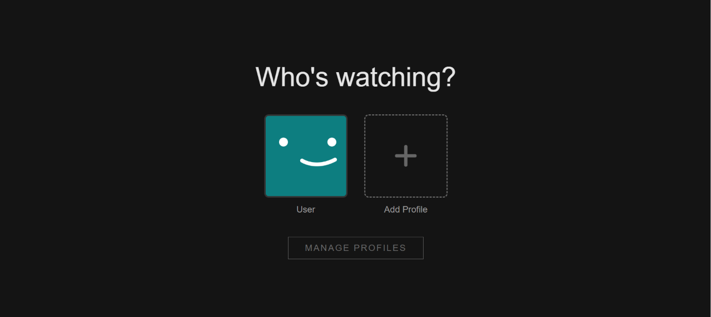
Netflix Clone
A streaming platform clone recreating core Netflix features including movie browsing, categorization, and dynamic content rendering.
The Problem
Streaming platforms must manage large amounts of content while maintaining fast navigation and engaging user experiences.
The Process
Built structured state management for API data, handled loading states and errors, and created reusable components for content rendering.
The Result
A responsive streaming UI strengthening React fundamentals, API integration patterns, component architecture, and dynamic data handling.
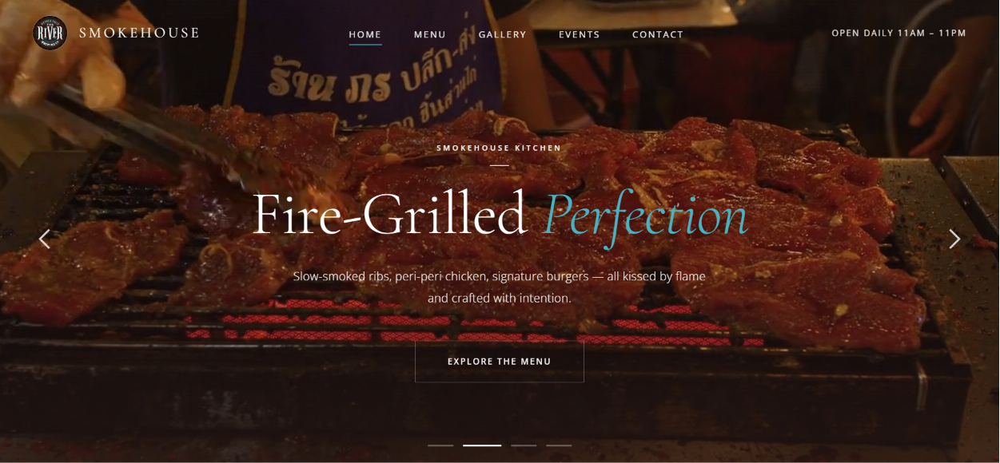
Smoke House Redesign
A full restaurant website redesign with an immersive menu, gallery, and booking experience.
The Problem
The restaurant's online presence did not fully communicate its unique atmosphere or encourage online engagement.
The Process
Studied restaurant UX best practices, created a cinematic hero section, designed interactive menu browsing, and optimized for mobile.
The Result
A sophisticated digital experience that reflects the restaurant's atmosphere, showcases its offerings beautifully, and simplifies reservations.
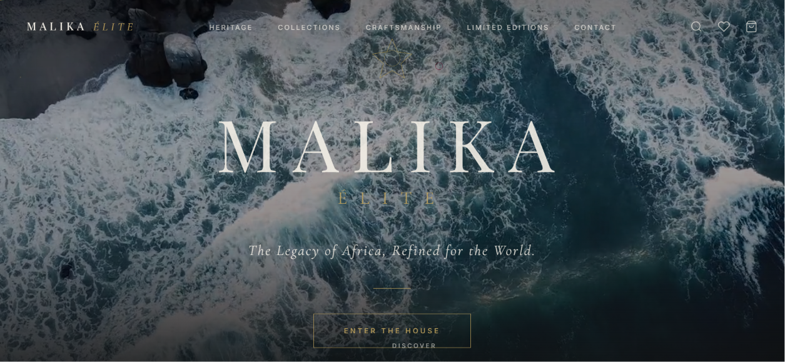
Malika Elite
A mobile-first luxury lifestyle application combining brand storytelling, curated collections, and premium digital interactions.
The Problem
Luxury-inspired digital experiences either rely on traditional European aesthetics or lean too far into cultural stereotypes.
The Process
Designed a mobile-first interface with editorial layouts, cinematic imagery, elegant typography, and refined color palettes.
The Result
A premium digital experience positioning Malika Elite as a contemporary African luxury house with international appeal.
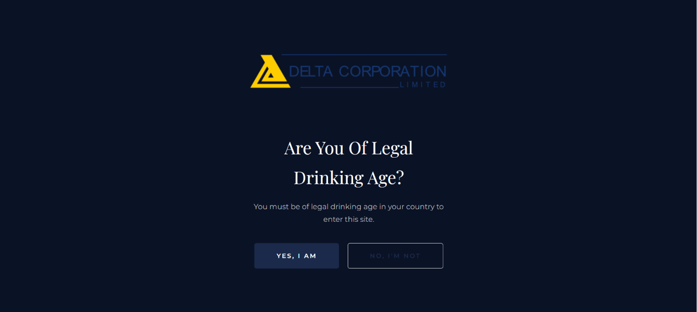
Delta Production
A modern production company website designed to showcase creative work, establish credibility, and generate client inquiries.
The Problem
Production companies struggle to balance showcasing creative work with building trust among potential clients.
The Process
Built a portfolio-first experience with cinematic hero sections, client testimonials, and optimized responsive layouts.
The Result
A modern production company website that effectively showcases creative work, builds trust, and creates a strong first impression.
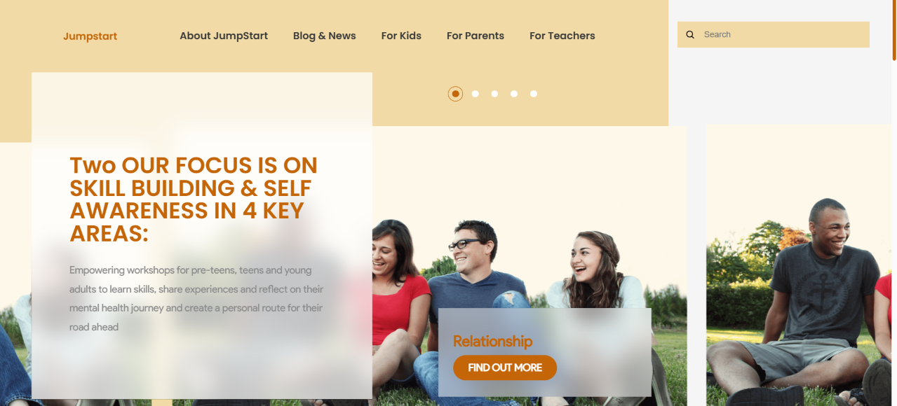
Jumpstart
A conversion-led educational product landing page designed to build credibility and drive enrolments.
The Problem
Educational products need landing pages that build credibility fast and convert visitors into enrolled students.
The Process
Designed a conversion-led layout with social proof sections, clear curriculum breakdowns, and a prominent enrollment CTA.
The Result
A focused, high-trust landing page concept that balances information density with clear conversion pathways.
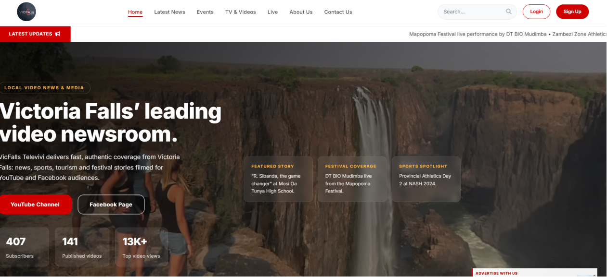
VicFalls Televivi
A digital community and media platform created to serve as a central hub for Victoria Falls events, content, and community engagement.
The Problem
The platform needed to bring together multiple content types while maintaining simplicity and ease of navigation.
The Process
Followed a content-first approach with event-focused layouts, responsive navigation structures, and optimized content loading.
The Result
A clean, accessible digital platform that successfully showcases community content and promotes local events.
My Journey
Where It Started — Started with HTML and CSS, learning how websites are structured, styled, and brought to life.
Learning to Build — Moved into JavaScript and began understanding how to turn static pages into interactive experiences.
From Pages to Products — Started building responsive websites and small projects, learning through experimentation, mistakes, and iteration.
Designing the Experience — Developed an interest in UI/UX and product design, learning how to create interfaces that are visually appealing and easy to use.
Building with Purpose — Expanded into Git, GitHub, collaboration, deployment, and practical development workflows while working on real projects.
Beyond Development — Explored digital marketing, content, SEO, and AI to better understand how digital products reach people and create value.
Where I Am Now — Currently completing a Software Development Specialization at Uncommon.org and continuing to build, learn, and experiment through hands-on projects.
Build digital products that solve meaningful problems and create opportunities for people and communities across Africa.
Let's work together
Have an interesting project, design concept, or marketing strategy you want to develop? Drop a line and let's link up.